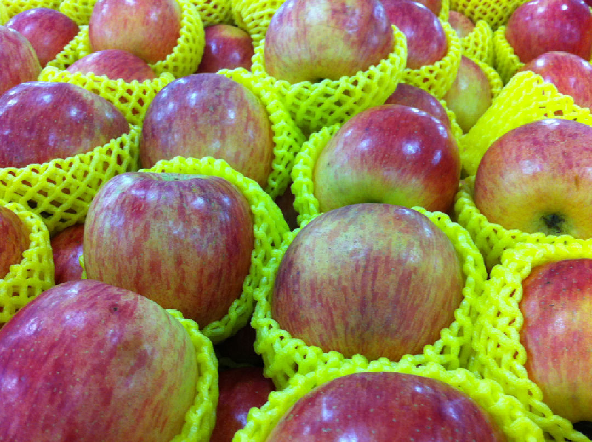
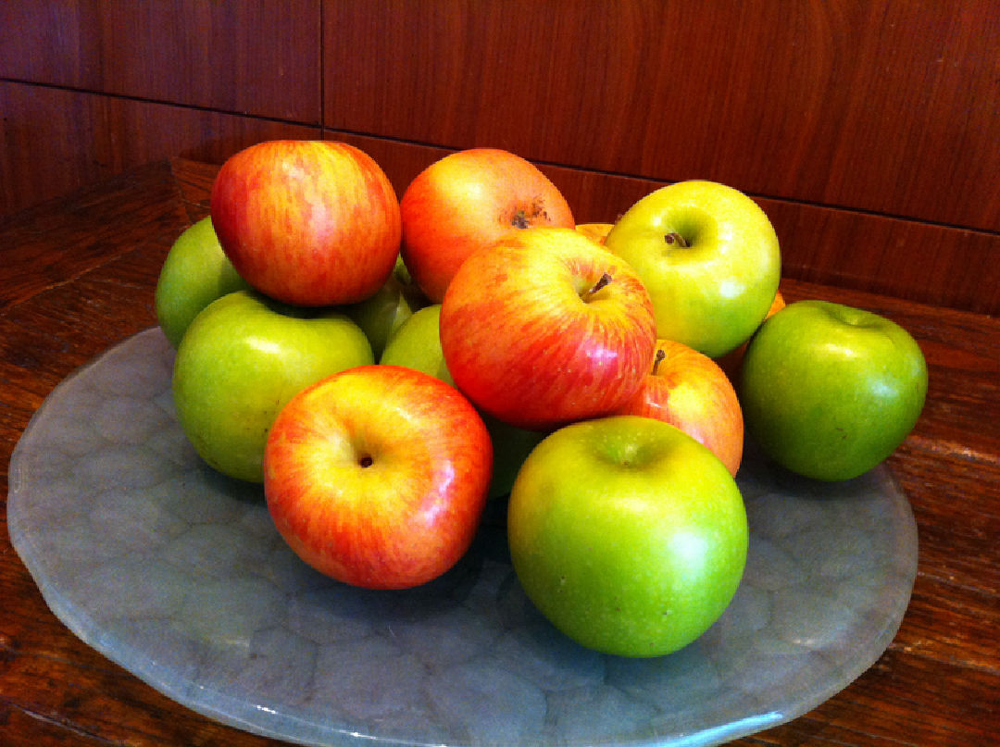

蘋果
落葉小喬木植物
葉長圓形，單葉，花為紅色，果實有球形、橢圓形、近圓形等。果實顏色繁多，有金黃、紫紅、青綠等。果肉有脆、堅實和密緻之別。

適合的料理
蘋果雞肉鮮奶油咖哩、蘋果生魚湯、蘋果派、燻鮭魚蘋果沙拉、烤蘋果

營養價值及產地
水份、纖維、灰分、維生素A、維生素B1、維生素B2、鈣、磷。 桃園復興，台中和平，南投仁愛，嘉義義竹，高雄美濃，花蓮卓溪，金門金寧等地。
資料來源:
參考網址